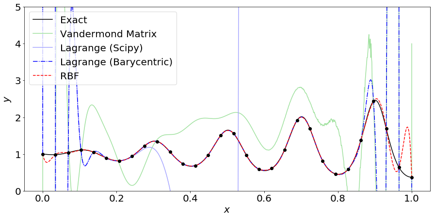
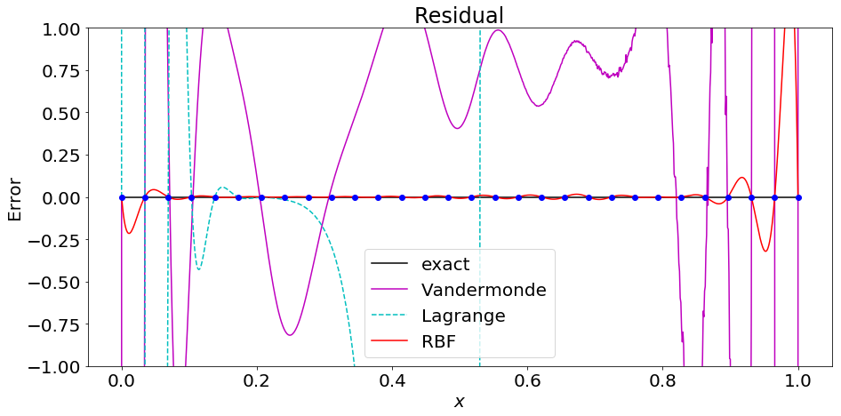
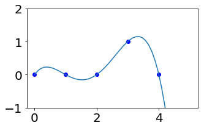
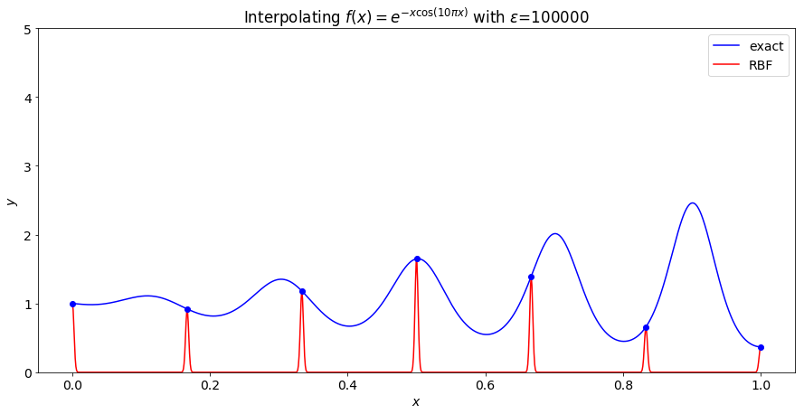
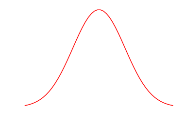
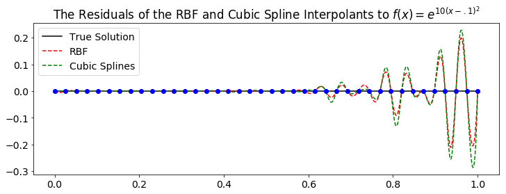
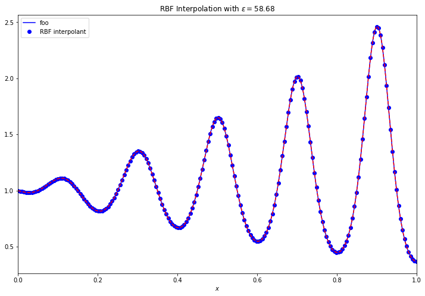
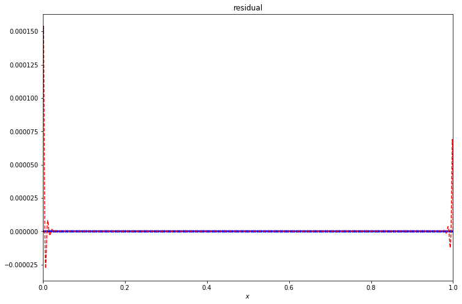
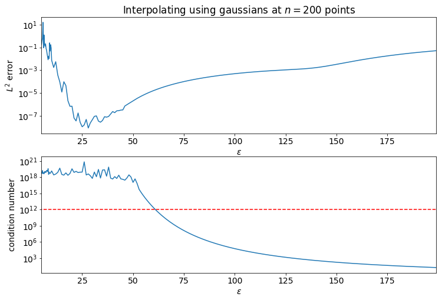

%matplotlib inline
import numpy as np
MEPS = np.finfo(float).eps
import numpy.linalg as la
import matplotlib.pyplot as plt
import matplotlib
from scipy.optimize import brentq
from scipy.stats import linregress as linreg
from scipy.interpolate import lagrange, CubicSpline
import numpy.polynomial.polynomial as poly
from halton import halton_sequenceShape Parameter Selection
matplotlib.rcParams.update({'font.size': 20})n = 30
eps = 8
#pnts = 'halton'
pnts = 'equal'
def foo(x):
return np.exp(-np.cos(10*np.pi*x) * x)
def rbf(r, eps):
return np.exp(-(eps*r)**2)
#return r**5
if pnts == 'halton':
xs = np.zeros(n)
xs[1:-1] = halton_sequence(1, (n-2), 1).flatten() #generates n halton points between 0 and 1
xs[0] = 0 # add the interior points
xs[-1] = 1
elif pnts == 'equal':
xs = np.linspace(0,1,n)
zs = np.linspace(0,1, 1000)def polyinterp(u, x, y, w=None):
if w == None:
w = baryweights(x)
ret = np.zeros(len(u))
for i in range(len(ret)):
if u[i] in x:
ret[i] = y[np.where(x==u[i])]
else:
weights = w /(u[i] - x)
ret[i] = weights.dot(y)/sum(weights)
return ret
def baryweights(x):
w = np.ones(len(x))
for j, xj in enumerate(x):
for xi in x[np.arange(len(x))!=j]:
w[j] /= (xj - xi)
return wA = xs.reshape((n,1)) ** np.arange(n)
print('Vandermonde condition number = \t\t%g' % la.cond(A))
cs = la.solve(A, foo(xs))
A_new = zs.reshape((len(zs),1)) ** np.arange(n)
van = A_new @ cs
l_poly = lagrange(xs, foo(xs))
l_poly_pnts = l_poly(zs)
A = rbf(np.abs(np.subtract.outer(xs,xs)), eps)
print('Radial Basis condition number = \t%g' % la.cond(A))
cs = la.solve(A, foo(xs))
A_new = rbf(np.abs(np.subtract.outer(zs,xs)), eps)
rbf_interp = A_new @ cs
fig = plt.figure(figsize=(15,7))
plt.plot(zs, foo(zs), 'k-', label='Exact')
plt.plot(zs, van, '-', color='#A0E19F', label='Vandermond Matrix')
plt.plot(zs, l_poly_pnts, '-', color='#A6A6FF', label='Lagrange (Scipy)')
plt.plot(zs, polyinterp(zs, xs, foo(xs)), 'b-.', label='Lagrange (Barycentric)')
plt.plot(zs, rbf_interp, 'r--', label='RBF')
plt.plot(xs, foo(xs), 'ko')
plt.ylim((0, 5))
# plt.legend(['exact', 'Vandermonde Matrix', 'Lagrange (SciPy)', 'RBF'])
plt.legend(loc=2)
# plt.title('Interpolating $f(x) = e^{-x\cos(10\pi x)}$')
plt.xlabel('$x$')
plt.ylabel('$y$')
plt.show()
fig = plt.figure(figsize=(15,7))
plt.plot(zs, [0]*len(zs), 'k-', label='Exact')
plt.plot(zs, van-foo(zs), 'm-', label='Vandermond Matrix')
plt.plot(zs, l_poly_pnts-foo(zs), 'c--')
plt.plot(zs, rbf_interp-foo(zs), 'r-')
plt.plot(xs, [0]*n, 'bo')
plt.legend(['exact', 'Vandermonde', 'Lagrange', 'RBF'])
plt.title('Residual')
plt.xlabel('$x$')
plt.ylabel('Error')
y_max = np.max(np.abs(rbf_interp-foo(zs)))*1.1
y_max = np.min([y_max, 1])
plt.ylim((-y_max,y_max))
plt.show()Vandermonde condition number = 9.06051e+18
Radial Basis condition number = 9.3426e+11

xs = range(5)
ys = [0,0,0,1,0]
l_poly = lagrange(xs,ys)
zs = np.linspace(0,5)
fig = plt.figure(figsize=(5,3))
plt.plot(xs, ys, 'bo')
plt.plot(zs, l_poly(zs))
plt.ylim((-1,2))
plt.show()
n = 7
eps = 10**5
def foo(x):
return np.exp(-np.cos(10*np.pi*x) * x)
def rbf(r, eps):
return np.exp(-eps * r**2)
xs = np.linspace(0,1,n)
zs = np.linspace(0,1, 1000)
A = rbf(np.abs(np.subtract.outer(xs,xs)), eps)
print('Radial Basis condition number = \t%g' % la.cond(A))
cs = la.solve(A, foo(xs))
A_new = rbf(np.abs(np.subtract.outer(zs,xs)), eps)
rbf_interp = A_new @ cs
fig = plt.figure(figsize=(15,7))
plt.plot(zs, foo(zs), 'b-')
plt.plot(zs, rbf_interp, 'r-')
plt.plot(xs, foo(xs), 'bo')
plt.ylim((0, 5))
plt.legend(['exact', 'RBF'])
plt.title('Interpolating $f(x) = e^{-x\cos(10\pi x)}$ with $\\varepsilon$=%d' % eps)
plt.xlabel('$x$')
plt.ylabel('$y$')
plt.show()Radial Basis condition number = 1
plt.axis('off')
plt.plot(np.linspace(-2,2), rbf(np.linspace(-2,2), 1), 'r-')
Convergence Rates
rbf_dict = {}
shape_labels = []
phs_labels = []
# Shape paramater RBFs
def rbf(r, eps):
return np.exp(-(eps*r)**2)
rbf_label = 'gaussian'
rbf_dict[rbf_label] = rbf
shape_labels += [rbf_label]
def rbf(r, eps):
return np.sqrt(1+(eps*r)**2)
rbf_label = 'multiquadric'
rbf_dict[rbf_label] = rbf
shape_labels += [rbf_label]
def rbf(r, eps):
return 1/(1+(eps*r)**2)
rbf_label = 'inverse quadratic'
rbf_dict[rbf_label] = rbf
shape_labels += [rbf_label]
def rbf(r, eps):
return 1/np.sqrt(1+(eps*r)**2)
rbf_label = 'inverse multiquadric'
rbf_dict[rbf_label] = rbf
shape_labels += [rbf_label]
# PHS RBFs
def rbf(r,eps):
return r**2 * np.log(r+MEPS)
rbf_label = '$\\log(r)r^2$'
rbf_dict[rbf_label] = rbf
phs_labels += [rbf_label]
def rbf(r,eps):
return r**3
rbf_label = '$r^3$'
rbf_dict[rbf_label] = rbf
phs_labels += [rbf_label]
def rbf(r,eps):
return r**4 * np.log(r+MEPS)
rbf_label = '$\\log(r)r^4$'
rbf_dict[rbf_label] = rbf
phs_labels += [rbf_label]
def rbf(r,eps):
return r**5
rbf_label = '$r^5$'
rbf_dict[rbf_label] = rbf
phs_labels += [rbf_label]
rbf_labels = shape_labels + phs_labelsdef functional(eps, dist_mat, rbf , target_cond):
return np.log( la.cond(rbf(dist_mat, eps)) / target_cond)**2
def optimize_eps(rbf, dist_mat, target_cond=10**12):
n = dist_mat.shape[0]
eps_guess = 1/np.min(dist_mat+np.diag([1]*n))
optimization_result = minimize_scalar(functional,
bracket=[eps_guess/2, eps_guess*2],
args=(dist_mat, rbf, target_cond))
return optimization_result['x']
def rbf_interp(xs, fs, zs, rbf, shape=True, print_cond=False):
dist_mat = np.abs(np.subtract.outer(xs,xs))
if shape:
eps = optimize_eps(rbf, dist_mat)
else:
eps = None
A = rbf(dist_mat, eps)
if print_cond:
print('log Cond(A)= %g' % ( np.log(la.cond(A))/np.log(10) ) )
cs = la.solve(A, fs)
A = rbf(np.abs(np.subtract.outer(zs,xs)), eps)
return A @ csn = 40
def foo(x):
#return np.exp(-np.cos(10*np.pi*x) * x)
return np.exp(-np.cos(10*np.pi*(x-.1)**2) )
rbf = rbf_dict['$r^5$']
xs = np.linspace(0,1, n)
fs = foo(xs)
zs = np.linspace(0,1, 1000)
us = rbf_interp(xs, fs, zs, rbf, print_cond=True)
exact = foo(zs)
err = la.norm(us-exact)/la.norm(exact)
print('RBF Error: %g' % err)
cubic = CubicSpline(xs, fs)
us_cubic = cubic(zs)
cubic_err = la.norm(us_cubic-exact)/la.norm(exact)
print('Cubic Error: %g' % cubic_err)
legend = ['True Solution', 'RBF', 'Cubic Splines']
fig = plt.figure(figsize=(12,4))
plt.plot(zs, foo(zs),'b-')
plt.plot(zs, us, 'r--')
plt.plot(zs, us_cubic, 'g--')
plt.plot(xs, fs, 'bo')
plt.ylim((0,3))
plt.legend(legend)
plt.title('The RBF and Cubic Spline Interpolants to $f(x)=e^{10(x-.1)^2}$')
plt.show()
fig = plt.figure(figsize=(12,4))
plt.plot(zs, [0]*len(zs),'k-')
plt.plot(zs, us-exact, 'r--')
plt.plot(zs, us_cubic-exact, 'g--')
plt.plot(xs, [0]*len(xs), 'bo')
plt.legend(legend)
plt.title('The Residuals of the RBF and Cubic Spline Interpolants to $f(x)=e^{10(x-.1)^2}$')
plt.show()log Cond(A)= 8.84565
RBF Error: 0.0346515
Cubic Error: 0.0435357

ns = [8*2**i for i in range(7)]
foo_label = '$f(x) = e^{\cos(10 \pi (x-.1)^2)}$'
def foo(x):
return np.exp(np.cos(10*np.pi*(x-.1)**2) )
errs = []
for rbf_label in shape_labels:
my_errs = []
for n in ns:
rbf = rbf_dict[rbf_label]
xs = np.linspace(0,1, n)
fs = foo(xs)
zs = np.linspace(0,1, 1000)
us = rbf_interp(xs, fs, zs, rbf)
exact = foo(zs)
err = la.norm(us-exact)/la.norm(exact)
my_errs.append(err)
errs.append(my_errs)
for rbf_label in phs_labels:
my_errs = []
for n in ns:
rbf = rbf_dict[rbf_label]
xs = np.linspace(0,1, n)
fs = foo(xs)
zs = np.linspace(0,1, 1000)
us = rbf_interp(xs, fs, zs, rbf, shape=False)
exact = foo(zs)
err = la.norm(us-exact)/la.norm(exact)
my_errs.append(err)
errs.append(my_errs)plt.figure(figsize=(12,8))
orders = []
for rbf_label, my_errs in zip(rbf_labels, errs):
plt.loglog(ns, my_errs, '--o')
orders.append(linreg(-np.log(ns[2:]), np.log(my_errs[2:]))[0] )
plt.legend([rbf + (' ~ $\mathcal{O}(h^{%.2f})$'%o) for rbf, o in zip(rbf_labels, orders)] )
plt.xticks(ns,ns)
plt.minorticks_off()
plt.xlabel('$n$')
plt.ylabel('relative $L^2$ error')
plt.title('RBF Interpolation Errors for ' + foo_label)
plt.show()
Other shape parameter selection
def functional(eps, dist_mat, rbf , target_cond):
return np.log( la.cond(rbf(dist_mat, eps)) / target_cond)
def optimize_eps(rbf, dist_mat, target_cond=10**12):
n = dist_mat.shape[0]
eps_guess = 1/np.min(dist_mat+np.diag([np.max(dist_mat)]*n))
root = brentq(functional,
MEPS, eps_guess*2,
args=(dist_mat, rbf, target_cond))
return root
def rbf_interp(xs, fs, zs, rbf, eps=1, optimize_shape=False, target_cond=10**12, print_cond=False):
dist_mat = np.abs(np.subtract.outer(xs,xs))
if optimize_shape:
eps = optimize_eps(rbf, dist_mat)
A = rbf(dist_mat, eps)
A_cond = la.cond(A)
if print_cond:
print('log Cond(A)= %g' % ( np.log(A_cond)/np.log(10) ) )
cs = la.solve(A, fs)
A = rbf(np.abs(np.subtract.outer(zs,xs)), eps)
return A @ cs, eps, A_conddef gen_points(a,b, n, kind='equal'):
if kind == 'halton':
xs = np.zeros(n)
xs[1:-1] = halton_sequence(1, (n-2), 1).flatten() #generates n halton points between 0 and 1
xs[0] = 0 # add the interior points
xs[-1] = 1
elif kind == 'equal':
xs = np.linspace(0,1,n)
elif kind == 'chebyshev':
xs = np.cos(np.linspace(np.pi,0,n))
xs += 1
xs /= 2
xs *= (b-a)
xs += a
return xsdef foo(x):
return np.exp(-np.cos(10*np.pi*x) * x)
n = 200
xs = gen_points(0,1,n, kind='equal')
zs = np.linspace(0,1, 1000)
fs = foo(zs)
'''fig = plt.figure(figsize=(12,4))
plt.plot(zs, fs, 'b-')
plt.plot(xs, foo(xs), 'bo')
plt.title('The function foo sampled at %d points' % n)
plt.xlim((0,1))
plt.show()'''
rbf = rbf_dict['gaussian']
us, eps, cond = rbf_interp(xs, foo(xs), zs, rbf, optimize_shape=True, target_cond=10**15)
print('epsilon = %.4f'%eps)
print('log cond(A) = %g' % (np.log(cond)/np.log(10)))
err = la.norm(us - fs)/la.norm(fs)
print('error = %g' % err)
#plot
fig = plt.figure(figsize=(12,8))
plt.plot(zs, fs, 'b-')
plt.plot(xs, foo(xs), 'bo')
plt.plot(zs, us, 'r--')
plt.legend(['foo', 'RBF interpolant'])
plt.title('RBF Interpolation with $\\varepsilon=%.2f$'%eps)
plt.xlabel('$x$')
plt.xlim((0,1))
plt.show()
fig = plt.figure(figsize=(12,8))
plt.plot(zs, [0]*len(zs), 'b-')
plt.plot(xs, [0]*len(xs), 'b.')
plt.plot(zs, us-fs, 'r--')
#plt.legend(['0', 'RBF interpolant residual'])
plt.title('residual')
plt.xlabel('$x$')
plt.xlim((0,1))
plt.show()epsilon = 58.6848
log cond(A) = 12
error = 7.21963e-06

n = 200
epsilons = np.block([np.linspace(5,10,20,endpoint=False), range(10, 200)])
target_cond = 10**12
rbf = rbf_dict['gaussian']
xs = gen_points(0,1,n, kind='halton')
zs = np.linspace(0,1, n*20)
fs = foo(zs)
errs = []
conds = []
for eps in epsilons:
us, eps, cond = rbf_interp(xs, foo(xs), zs, rbf, eps=eps, optimize_shape=False, target_cond=target_cond)
errs += [la.norm(us - fs)/la.norm(fs)]
conds += [cond]
fig, axs = plt.subplots(2, sharex=True, figsize=(12,8))
#fig = plt.figure(figsize=(12,8))
axs[0].semilogy(epsilons, errs)
#axs[0].set_ylim(10**-16,.)
axs[0].set_xlabel('$\\varepsilon$')
axs[0].set_ylabel('$L^2$ error')
axs[0].set_title('Interpolating using gaussians at $n=%d$ points' % n)
axs[0].tick_params(labelbottom=True)
#plt.show()
#fig = plt.figure(figsize=(12,8))
axs[1].semilogy(epsilons, conds)
axs[1].semilogy([-1,np.max(epsilons)], [target_cond, target_cond], 'r--')
axs[1].set_xlabel('$\\varepsilon$')
axs[1].set_ylabel('condition number')
#axs[1].set_title('Interpolating using gaussians at $n=%d$ points' % n)
plt.xlim(np.min(epsilons), np.max(epsilons))
plt.show()